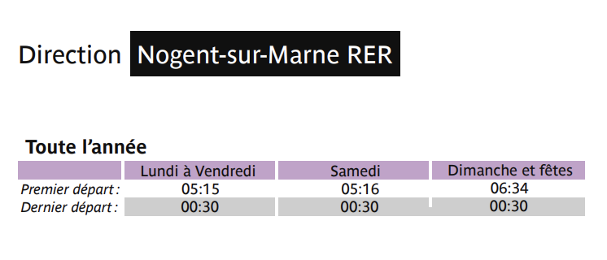
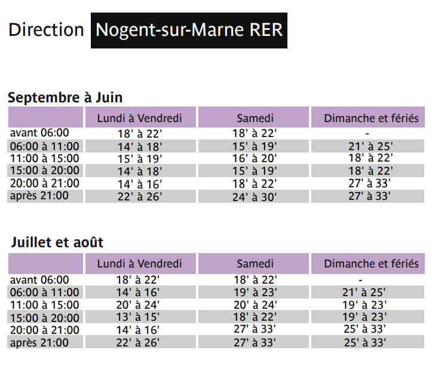
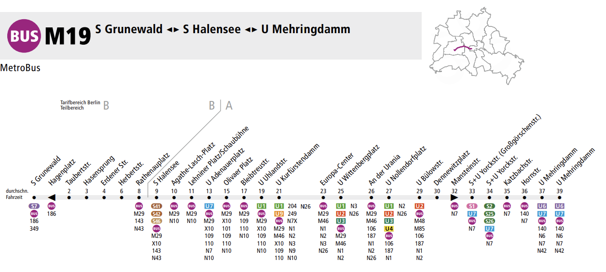
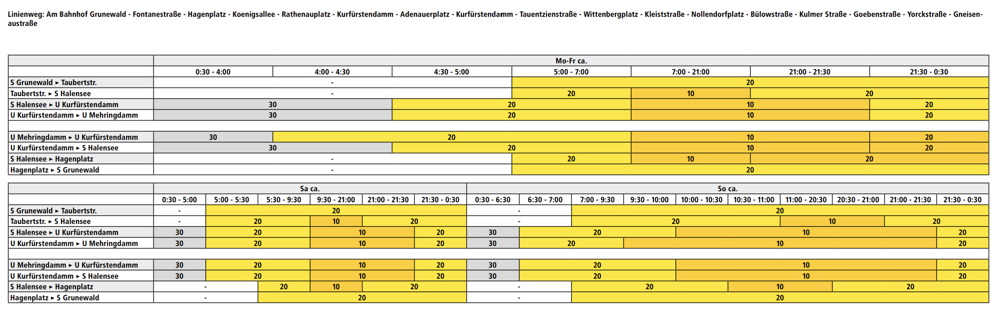
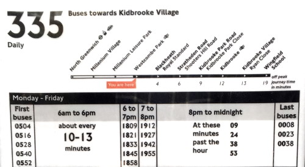
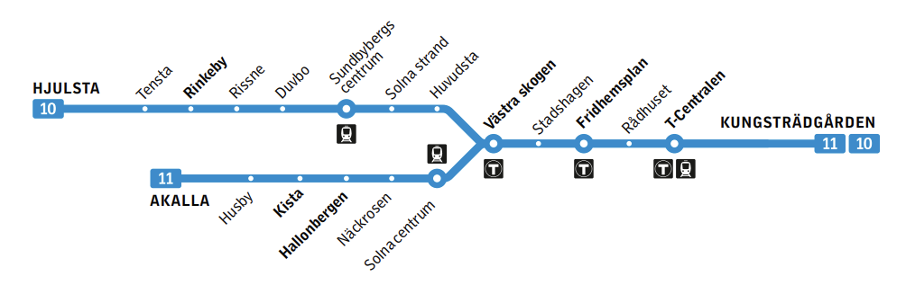
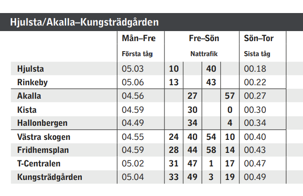
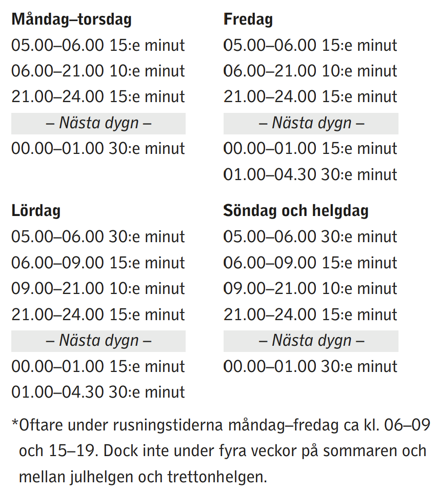

Include frequencies
Introduction
Frequency of departures are not commonly found in public transit timetables. That's beacuse some transit try to fit in as much departures as possible and then time between departures can be random. Another is that couple of first and last departures often have pretty random departure time differences and that can be hard to display, though I think the main thing is that for less frequent modes of transit, frequencies are not that useful, if the vehicles arrive not frequently and are plagued by delays (like buses).
Examples
Paris (frequent lines)


Frequent lines in Paris have a separate timetable for each line, most important stops are displayed on the map of the line (you can check it here). First page shows first and last departure times and the second page shows frequencies for the different periods.
Berlin


Berlin has a simplified timetable for each route, there is no departure time for any stop, instead there is a stop list (on the first image) and a frequency table (on the second image). Frequencies are measured often for the entire route, but for lines with more complicated travel patterns frequencies are calculated on specific, portions of the line. Each frequency has it's own color which makes the timetable more readable.
London (on the stop)

London has a simplified timetable for each route and each stop, this version is displayed on the stops themselves. On top we can see a stop list with off peak travel times. On the bottom we can see a timetable, where the first row shows departure hours or first and last departures and the other rows show departure times or when the departures are more frequent than 15 minutes, they are grouped together and shown with an approximate frequency.
Stockholm (tunnelbana)



Stockholm tunnelbana (metro) has a timetable for each line color (group of lines with the city center portion), first image shows the diagram of the lines, second image shows the timetable, it has separate columns for the first and last departures and columns for night operation (though I'm not sure when it starts and ends) with the same minutes for each hour. Third image shows frequencies for different periods of the day (I'm not sure if it's on the common section or on the branches.), there's also a disclaimer for more frequent departures during rush hour.